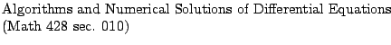
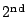

Spring 2002
Prof. L. F. Rossi
Office: Ewing 524
Telephone: x1880
Email: rossi@math.udel.edu
WWW: http://math.udel.edu/rossi
Computer project number: 2166
Course description: This course focuses on the numerical integration of equations. Scientific computation can be studied abstractly, and it can be practiced by professionals to solve problems. This course emphasizes both in equal parts. There is a rich mathematical theory underlying the application of numerical algorithms to various problems, and there is a lot to be learned by implementing numerical algorithms and studying their performance on specific problems.
Prerequisites: Math426 or CISC410 is a prerequisite for this course.
Your objectives:
I hope everyone will hone their mathematical abilities to reason quantitatively, logically, confidently and eventually correctly. In this course, everyone will master the following skills:
Your resources: All of the following will help you achieve your objectives.

ed. by Kincaid & Cheney. I will not follow the book religiously, but the book will provide a good reference for most of the material.
Grading policy: Your grade is determined solely by your
understanding of mathematics and your ability to communicate this
knowledge to me on exams and other assignments.
| Homework | 20% |
| Projects (15% each) | 45% |
| Exams (8% each) | 24% |
| Final exam | 11% |
Exams: All exams will occur in class on the days listed on the syllabus. There are no makeup exams without prior notification and a valid, documented reason. Graded exams will be handed back in person in office hours only.
Problem sets: I will drop your lowest three homework scores during the semester. I do not accept late homework, so do not squander these three assignments. You might be sick sometime and not be able to do your homework on time.
Projects: Projects are larger scale problems that require you to implement computational algorithms to solve a problem.
Student conduct: To provide the best learning environment for all my students, I expect all my students to conduct all their scholarly activities with honesty and integrity. Students should note that in certain situations doing nothing can be dishonest. Though I hope there will never be a need to address academic dishonesty, I will strongly enforce all provisions noted in the Academic Regulations for Undergraduates. See The University of Delaware Undergraduate and Graduate Catalog
http://www.udel.edu/catalog/current/ugacadregs.html#acadhonesty
for further discussion on basic responsibilities.
This course involves students creating software which should be treated no differently than any other academic endeavor. For example, if you copy part of a students computer program or script, you are being dishonest.
Tentative schedule:
The schedule listed below is experimental, and I do not expect to follow the book closely during the semester.
| Week of | Section(s) | Topic(s) |
| Feb 7 | 6.1, 6.2 | Preliminaries, prolongation, restriction, interpolation. |
| Feb 12 | 7.1-7.5 | Numerical quadrature (Simpson, Romburg, etc), adaptive methods. |
| Feb 19 | 8.1, 8.6 | Preliminaries: systems of ODES, forward Euler (*snore*), consistency and stability. |
| Feb 26 | 8.2, 8.5 | Taylor series methods, backward Euler, the scalar test equation. |
| Mar 5 | 8.4 | Exam 1, multistep methods. |
| Mar 12 | 8.4 | Multistep methods (cont'd), the Adams' family, accuracy and stability. |
| Mar 19 | 8.3 | Runge-Kutta methods, analysis and error estimators. |
| Mar 26 | 8.7-8.9 | Boundary value problems, finite differences, shooting. |
| Apr 9 | 8.12 | Exam 2, stiff equations and methods. |
| Apr 16 | 8.12 | More stiff equations and methods, introduction to parabolic PDEs. |
| Apr 23 | 9.1, 9.2 | Discretizations, implicit/explicit methods and CFL conditions. |
| Apr 30 | 9.2 | Crank-Nicholson, ADI, Fourier stability analysis and other magic. |
| May 7 | 9.9 | Exam 3, elliptic problems, fast Poisson solvers. |
| May 14 | Catch-up, synopsis, fun topic or review. |
Important dates:
| Feb 18 | Last day to drop without record. |
| Mar 5 | Project #1 due. Exam 1. |
| Apr 9 | Project #2 due. Exam 2. |
| Apr 22 | Last day to drop with a ``W''. |
| May 7 | Project #3 due. Exam 3. |
| TBA in March | Final exam. |
Problem sets: The best way to learn and understand mathematics is by trying problems. To be a computational scientist, you must implement algorithms. To receive credit, you must show your work. Homework assignments will be distributed in class and posted on the course website.